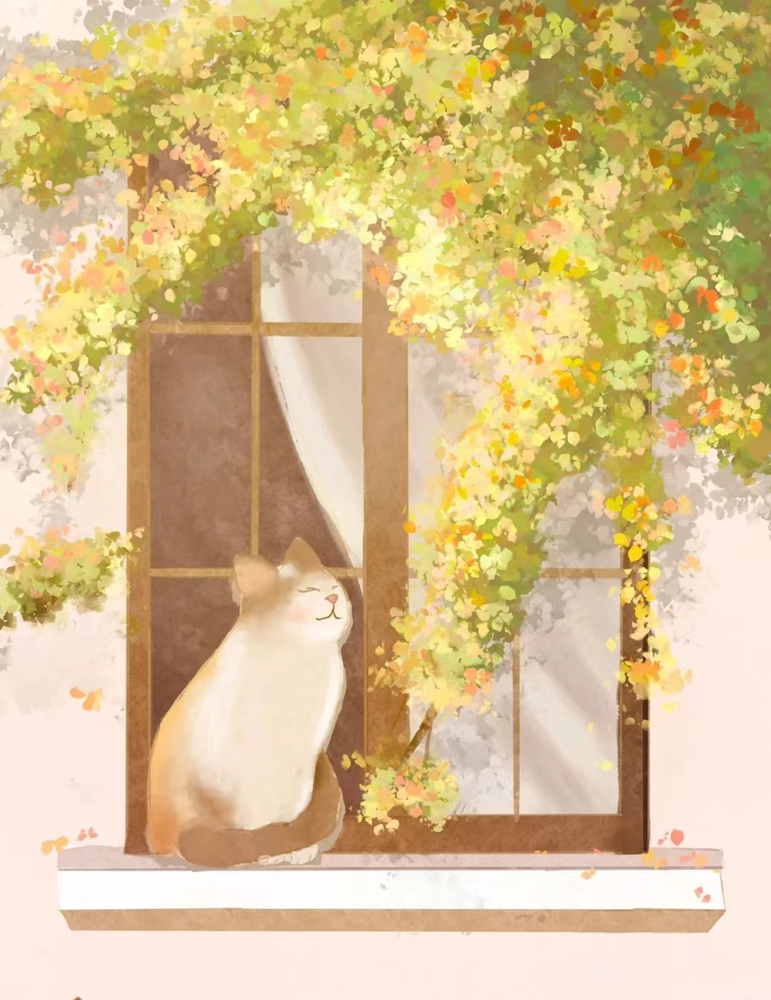

当一个人踮起脚尖靠近太阳的时候，
全世界都挡不住他的阳光。
When a man stands on tiptoe near the sun, the whole world can't block his sunshine.
夜色难免黑凉，前行必有曙光。
The night will inevitably be dark and cool, and there will be dawn before us.
路上，有风有雨是常态，
风雨无阻是心态，风雨兼程是状态。
On the road, it is normal to have wind and rain, it is a state of mind to have rain and wind, and it is a state to have both wind and rain.
愿你纵踩淤泥，也要心向光明。
May you tread on the mud and look to the light.
平和地接纳，不屈地奋斗，坚定地前行。
Accept peacefully, struggle unyielding, and move forward firmly.
但愿以后抬头有阳光，关关难过关关过。
I hope there will be sunshine when I look up in the future.
你只管奋力前行,时间美好自然会与你相遇。
You just push forward, and the beautiful time will naturally meet you.
